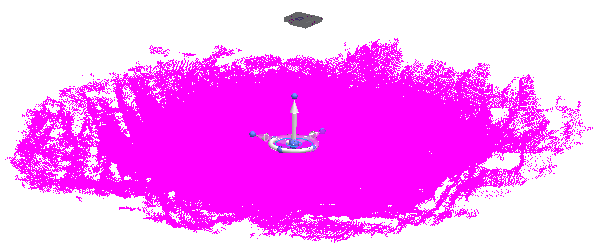
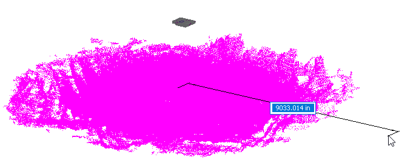
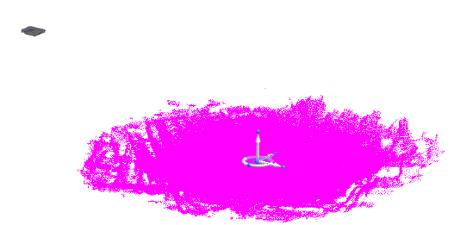

Move a point cloud
You can move the point cloud to a new location as you work on your assembly.
-
In PathFinder, right-click the point cloud file and choose
 Move Point Cloud.
Move Point Cloud. -
Click a start point on the point cloud to display the 3D steering wheel.

-
On the 3D steering wheel, click an axis to specify the direction.
-
Move the cursor in that direction until the desired distance value is displayed in the box, and then click to move the point cloud.

-
The steering wheel moves with the point cloud. You can click another point to move the point cloud again in another direction, or right-click to end the command.

You can choose whether to display the steering wheel on a newly inserted point cloud file using the Point Cloud Options dialog box.